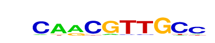
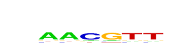

| p-value: | 1e-137 |
| log p-value: | -3.165e+02 |
| Information Content per bp: | 1.705 |
| Number of Target Sequences with motif | 531.0 |
| Percentage of Target Sequences with motif | 3.49% |
| Number of Background Sequences with motif | 315.4 |
| Percentage of Background Sequences with motif | 0.94% |
| Average Position of motif in Targets | 29.9 +/- 19.1bp |
| Average Position of motif in Background | 47.5 +/- 32.4bp |
| Strand Bias (log2 ratio + to - strand density) | 1.7 |
| Multiplicity (# of sites on avg that occur together) | 1.02 |
| Motif File: | file (matrix) reverse opposite |
| Rank | Match Score | Redundant Motif | P-value | log P-value | % of Targets | % of Background | Motif file |
| 1 | 0.753 | 1e-120 | -276.966919 | 1.20% | 0.11% | motif file (matrix) | |
| 2 | 0.934 |  | 1e-116 | -267.284675 | 3.39% | 1.02% | motif file (matrix) |
| 3 | 0.673 | 1e-95 | -220.513102 | 1.37% | 0.21% | motif file (matrix) | |
| 4 | 0.844 | 1e-81 | -187.965484 | 2.62% | 0.84% | motif file (matrix) | |
| 5 | 0.757 | 1e-62 | -144.728008 | 8.82% | 5.46% | motif file (matrix) | |
| 6 | 0.766 | 1e-56 | -131.104511 | 3.70% | 1.76% | motif file (matrix) | |
| 7 | 0.696 |  | 1e-12 | -28.023486 | 3.91% | 2.89% | motif file (matrix) |
| 8 | 0.607 | 1e-11 | -27.622941 | 7.28% | 5.89% | motif file (matrix) |